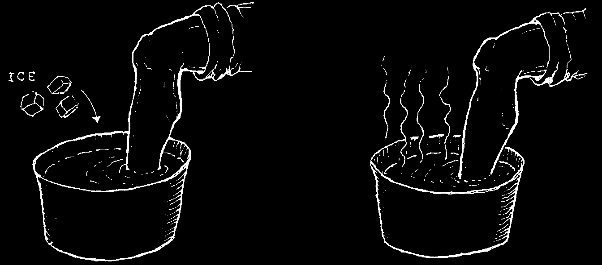
STRAINS AND SPRAINS (BRUISING OR TEARING IN A TWISTED JOINT)
Many times it is impossible to know whether a hand or foot is bruised, sprained, or broken. It helps to have an X-ray taken.
But usually, breaks and sprains are treated more or less the same. Keep the joint motionless. Wrap it with something that gives firm support. Use crutches to give a sprained foot as much rest as possible. Serious sprains need at least 3 or 4 weeks to heal. Broken bones take longer.
To relieve pain and swelling, keep the sprained part raised high. During the first day or two, put ice wrapped in cloth or plastic, or cold, wet cloths over the swollen joint for 20 to 30 minutes once every hour. This helps reduce swelling and pain. After
24 to 48 hours (when the swelling is no longer getting worse), soak the sprain in hot water several times a day.
For the first day soak the sprained
After 1 or 2 days use hot soaks.
joint in cold water.
You can keep the twisted joint in the correct position for healing by using a homemade cast (see p. 14) or an elastic bandage.
Wrapping the foot and ankle with an elastic bandage will also prevent or reduce swelling. Start from the toes and wrap upward, as shown here. Be careful not to make the bandage too tight, and remove it briefly every hour or two. Also take aspirin or acetaminophen.
If the pain and swelling do not start to go down after 48 hours, seek medical help.
CAUTION: Never rub or massage a sprain or broken bone. It does no good and can do more harm.
If the foot seems very loose or 'floppy’ or if the person has trouble moving his toes, look for medical help. Surgery may be needed.

POISONING
Many children die from swallowing things that are poisonous. To protect your children, take the following precautions:
Keep all poisons out of
Never keep kerosene, gasoline, or reach of children.
other poisons in cola or soft drink bottles, because children may try to drink them.
SOME COMMON POISONS TO WATCH OUT FOR:
• rat poison
• poisonous leaves, seeds,
• DDT, lindane, sheep dip, and other berries, or mushrooms insecticides or plant poisons
• castor beans
• medicine (any kind when much is
• matches swallowed; take special care
• kerosene, paint thinner, with iron pills)
gasoline, petrol, lighter fluid
• tincture of iodine
• lye or caustic soda
• bleach
• salt—if too much is given to
• cigarettes babies and small children
• rubbing or wood alcohol
• spoiled food (see p. 135)
Treatment:
If you suspect poisoning, do the following immediately:
♦ If the child is unconscious, lay him on his side. If he stops breathing, give him mouth-to-mouth breathing (p. 80).
♦ If the child is awake and alert, give him plenty of water or milk to drink to dilute the poison (about 1 glass of water every 15 minutes).
♦ If you have it, also give him half a cup of activated charcoal (p. 388), or a tablespoon of powdered charcoal mixed into a glass of warm water.
♦ If the child is awake and alert and you are sure vomiting is safe, you can make him vomit. Put your finger in his throat or make him drink very salty water.
♦ CAUTION: Do not make a person vomit if he has swallowed kerosene, gasoline (petrol), bleach, paint thinner, some pesticides, strong acids or corrosive substances (lye), or if he is unconscious.
Cover the person if he feels cold, but avoid too much heat. If poisoning is severe, look for medical help.

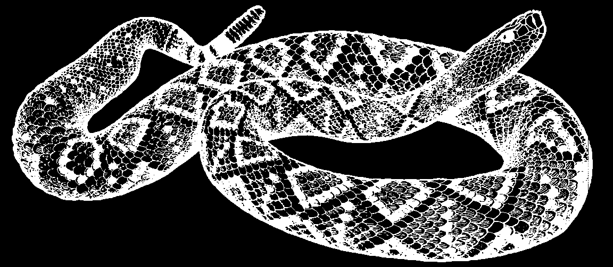
SNAKEBITE
Note: Try to get information on the kinds of snakes in your area and put it on this page.
RATTLESNAKE—
North America.
Mexico, and
Central America
When someone has been bitten by a snake, try to find out if the snake was poisonous or harmless. Their bite marks are usually different:
POISONOUS
fang marks
SNAKE
The bite of most poisonous snakes leaves marks of the 2 fangs (and sometimes, little marks made by the other teeth).
PROBABLY A
NON-POISONOUS SNAKE
If the bite of a snake leaves only 2 rows of teeth marks, but no fang marks, it is less likely that the snake is poisonous. But it still could be.
People often believe that certain harmless snakes are poisonous. Try to find out which of the snakes in your area are truly poisonous and which are not. Contrary to popular opinion, boa constrictors and pythons are not poisonous. Please do not kill non-poisonous snakes, because they do no harm. On the contrary, they kill mice and other pests that do lots of damage. Some even kill poisonous snakes.

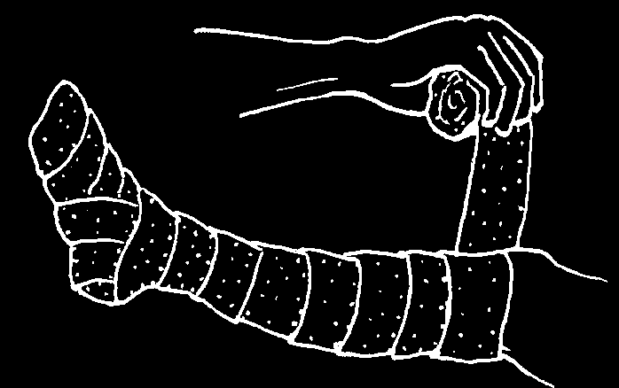
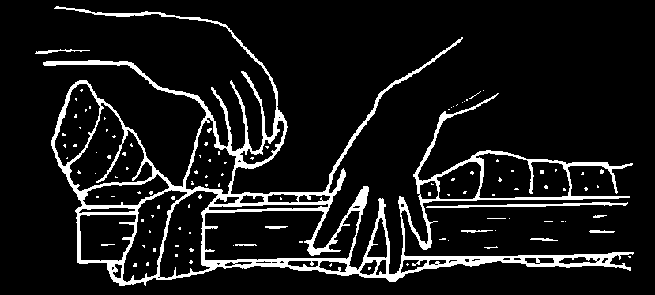
Treatment for poisonous snakebite:
1. Stay quiet; do not move the bitten part. The more it is moved, the faster the poison will spread through the body. If the bite is on the foot, the person should not walk at all. Send for medical help.
2. Remove jewelry because swelling can spread rapidly.
3. Wrap the bitten area with a wide elastic bandage or clean cloth to slow the spread of poison. Keeping the arm or leg very still, wrap it tightly, but not so tight it stops the pulse at the wrist or on top of the foot. If you cannot feel the pulse, loosen the bandage a little.
4. Wind the bandage over the hand or foot, and up the whole arm or leg.
Make sure you can still feel the pulse.
5. Then, put on a splint to prevent the limb from moving (see p. 14).
6. Carry the person, on a stretcher if possible, to the nearest health center.
If you can, also take the snake, because different snakes may require different antivenoms (antitoxins, see p. 387). If an antivenom is needed, leave the bandage on until the injection is ready, and take all precautions for ALLERGIC SHOCK
(see p. 70). Also give tetanus antitoxin (p. 388). If there is no need for antivenom, remove the bandage.
Have antivenoms for snakes in your area ready and know how to use them—before someone is bitten!
Poisonous snakebite is dangerous. Send for medical help—but always do the things explained above at once.
Most folk remedies for snakebite do little if any good (see p. 3).
Some treatments can cause infection or make the effects of the venom worse.
Do not:
• cut the skin or the flesh around the bite
• tie anything tight around the bite or the person’s body
• put ice on or around the bite
• shock the person with electricity
• try to suck the blood or the venom out of the bite
Never drink alcohol after a snakebite. It makes things worse!

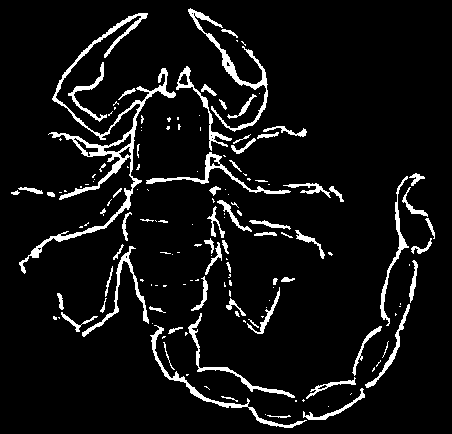

BITE OF THE BEADED LIZARD (GILA MONSTER)
The bite of the beaded lizard is
Southern treated just like a poisonous snakebite,
U.S.A. and
Northern except that there are no good
Mexico antivenoms for it. The bite can be very dangerous. Wash the bite area well.
Avoid movement and keep the bite below the level of the heart.
SCORPION STING
Some scorpions are far more poisonous than others. To adults, scorpion stings are rarely dangerous. Take aspirin or acetaminophen and if possible put ice on the sting to help calm the pain. For the numbness and pain that sometimes last weeks or months, hot compresses may be helpful (see p. 193).
To children under 5 years old, scorpion stings can be dangerous, especially if the sting is on the head or body. In some countries scorpion antitoxin is available (p. 387). To do much good it must be injected within 2 hours after the child has been stung. Give acetaminophen for the pain. If the child stops breathing, use mouth to mouth breathing
(see p. 80). Also give tetanus antitoxin (see p. 388). If the child who was stung is very young or has been stung on the main part of the body, or if you know the scorpion was of a deadly type, seek medical help fast.
BLACK WIDOW AND OTHER SPIDER BITES
The majority of spider bites, including that of the tarantula, are painful but not dangerous. The bite of a few kinds of spiders—such as the 'black widow’ and related species—can make an adult quite ill. They can be dangerous for a small child. A black widow bite often causes painful muscle cramps all over the body, and extreme pain in the stomach muscles which become rigid. (Sometimes this is confused with appendicitis!)
Give acetaminophen or aspirin and look for medical help. Most cures sold in stores are a waste of money and do not help.
Diazepam, p. 390, may help reduce muscular spasms. If signs of shock develop, treat for allergic shock, p. 70. Injections of cortisone may be needed in children. Also give tetanus antitoxin (see p. 388). A good antivenom exists but is hard to get.
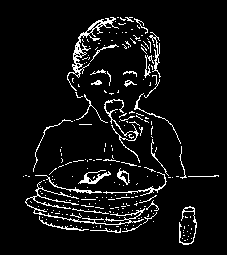
CHAPTER
Nutrition:
What to Eat to Be Healthy 11
SICKNESSES CAUSED BY NOT EATING WELL
Good food is needed for a person to grow well, work hard, and stay healthy. Many common sicknesses come from not eating enough.
A person who is weak or sick because he does not eat enough, or does not eat the foods his body needs, is said to be poorly nourished—or malnourished. He suffers from malnutrition.
Poor nutrition can result in the following health problems:
in children
• failure of a child to grow or gain
• lack of energy, child is sad and does weight normally (see p. 297)
not play
• slowness in walking, talking, or
• swelling of feet, face, and hands, often thinking with sores or marks on the skin
• big bellies, thin arms and legs
• thinning, straightening, or loss of hair,
• common illnesses and or loss of its color and shine infections that last longer, are
• poor vision at night, dryness of eyes, more severe, and more often blindness cause death in anyone
• weakness and tiredness
• sores in the corners of the mouth
• loss of appetite
• painful or sore tongue
• anemia
• 'burning’ or numbness of the feet
Although the following problems may have other causes, they are sometimes caused and are often made worse by not eating well:
• diarrhea
• stomach discomfort
• frequent infections
• dryness and cracking of the skin
• ringing or buzzing in the ears
• heavy pulsing of the heart or of the
• headache
'pit’ of the stomach (palpitations)
• bleeding or redness of the gums
• anxiety (nervous worry) and various
• skin bruises easily nerve or mental problems
• nosebleeds
• cirrhosis (liver disease)
Poor nutrition during pregnancy causes weakness and anemia in the mother and increases the risk of her dying during or after childbirth. It is also a cause of miscarriage, or of the baby being born dead, too small, or with a disability.

Eating right helps the body resist sickness.
Not eating well may be the direct cause of the health problems just listed. But most important, poor nutrition weakens the body’s ability to resist all kinds of diseases, especially infections:
• Poorly nourished children are much more likely to get severe diarrhea, and to die from it, than are children who are well nourished.
• Measles is especially dangerous where many children are malnourished.
• Tuberculosis is more common, and gets worse more rapidly, in those who are malnourished.
• Cirrhosis of the liver, which comes in part from drinking too much alcohol, is more common and worse in persons who are poorly nourished.
• Even minor problems like the common cold are usually worse, last longer, or lead to pneumonia more often in persons who are poorly nourished.
Eating right helps the sick get well.
Not only does good food help prevent disease, it helps the sick body fight disease and become well again. So when a person is sick, eating enough nutritious food is especially important.
Unfortunately, some mothers stop feeding a child or stop giving certain nutritious foods when he is sick or has diarrhea—so the child becomes weaker, cannot fight off the illness, and may die. Sick children need food! If a sick child will not eat, encourage him to do so.
Feed him as much as he will eat and drink. And be patient. A sick child often does not want to eat much. So feed him something many times during the day. Also, try to make sure that he drinks a lot of liquid so that he pees (passes urine) several times a day. If the child will not take solid foods, mash them and give them as a mush or gruel.
Often the signs of poor nutrition first appear when a person has some other sickness. For example, a child who has had diarrhea for several days may develop swollen hands and feet, a swollen face, dark spots, or peeling sores on his legs. These are signs of severe malnutrition. The child needs more good food! And more often.
Feed him many times during the day.
During and after any sickness, it is very important to eat well.
EATING WELL AND
KEEPING CLEAN
ARE THE BEST
GUARANTEES
OF GOOD HEALTH.

WHY IT IS IMPORTANT TO EAT RIGHT
People who do not eat right develop malnutrition. This can happen from not eating enough food of any kind (general malnutrition or 'undernutrition’), from not eating the right kinds of foods (specific types of malnutrition), or from eating too much of certain foods (getting too fat, see p. 126).
Anyone can develop general malnutrition, but it is especially dangerous for:
• children, because they need lots of food to grow well and stay healthy;
• women of child bearing age, especially if they are pregnant or breastfeeding, because they need extra food to stay healthy, to have healthy babies, and to do their daily work;
• elderly persons, because often they lose their teeth and their taste for food, so they cannot eat much at one time, even though they still need to eat well to stay healthy;
• people with HIV, because they need more food to fight their infection.
A malnourished child does not grow well. She generally is thinner and shorter than other children. Also, she is more likely to be irritable, to cry a lot, to move and play less than other children, and to get sick more often. If the child also gets diarrhea or other infections, she will lose weight. A good way to check if a child is poorly nourished is to measure the distance around her upper arm.
Checking Children for Malnutrition: The Sign of the Upper Arm
After 1 year of age, any child whose middle upper arm measures less than 11 ½ cm. around is malnourished — no matter how 'fat’ his feet, hands, less than
11 ½ cm.
and face may look. If the arm measures between 11 ½ and 12 ½ cm., he is at risk of becoming malnourished.
Another good way to tell if a child is well nourished or poorly nourished is to weigh him regularly: once a month in the first year, then once every 3 months. A healthy, well nourished child gains weight regularly. The weighing of children and the use of the Child Health
Chart are discussed fully in Chapter 21.
PREVENTING MALNUTRITION
To stay healthy, our bodies need plenty of good food. The food we eat has to fill many needs. First, it should provide enough energy to keep us active and strong.
Also, it must help build, repair, and protect the different parts of our bodies. To do all this we need to eat a combination of foods every day.

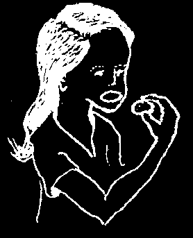

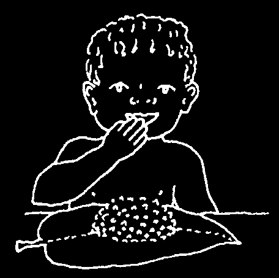
MAIN FOODS AND HELPER FOODS
In much of the world, most people eat one main low-cost food with almost every meal. Depending on the region, this may be rice, maize, millet, wheat, cassava, potato, breadfruit, or banana. This main food usually provides most of the body’s daily food needs.
However, the main food alone is not enough to keep a person healthy. Certain helper foods are needed. This is especially true for growing children, women who are pregnant or breastfeeding, and older people.
Even if a child regularly gets enough of the main food to fill her, she may become thin and weak. This is because the main food often has so much water and fiber in it, that the child’s belly fills up before she gets enough energy to help her grow.
We can do 2 things to help meet such children’s energy needs:
1. Feed children more often —at least 5 times a day when a child is very young, too thin, or not growing well. Also give her snacks between meals.
CHILDREN, LIKE CHICKENS,
SHOULD ALWAYS BE PECKING.
2. Also add high energy 'helper foods’ such as oils and sugar or honey to the main food. It is best to add vegetable oil or foods containing oils—nuts, groundnuts
(peanuts), or seeds, especially pumpkin or sesame seeds.
If the child’s belly fills up before her energy needs are met, the child will become thin and weak.
To meet her energy needs, a child would
But she needs only this much rice when need to eat this much boiled rice.
some vegetable oil is mixed in.
High energy foods added to the main food help to supply extra energy. Also, 2 other kinds of helper foods should be added to the main food:
When possible, add body–building foods (proteins) such as beans, milk, eggs, groundnuts, fish, and meat.
Also try to add protective foods such as orange or yellow fruits and vegetables, and also dark green leafy vegetables. Protective foods supply important vitamins and minerals (see p. 113).
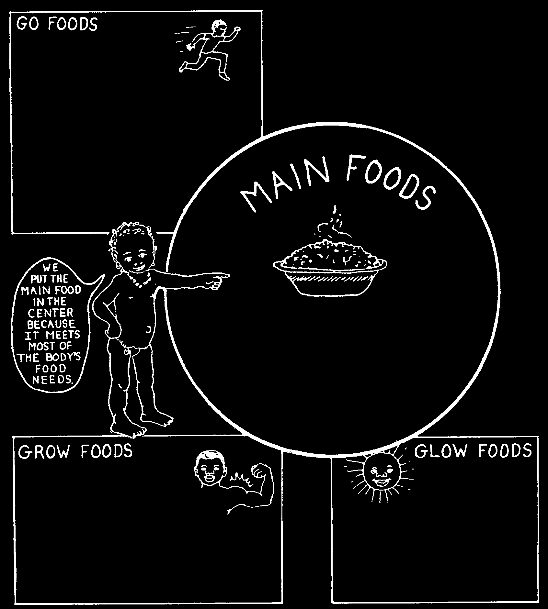
EATING RIGHT TO STAY HEALTHY
The 'main food’ your family eats usually provides most—but not all—of the body’s energy and other nutritional needs. By adding helper foods to the main food you can make low cost nutritious meals. You do not have to eat all the foods listed here to be healthy. Eat the main foods you are accustomed to, and add whatever
'helper foods’ are available in your area. Try to include 'helper foods’ from each group, as often as possible.
remember: Feeding children
(energy helpers)
enough and feeding them often (3 to 5 times a day) is
Examples:
usually more important than the
Fats (vegetable oils, butter, ghee, lard)
types of food you feed them.
Foods rich in fats (coconut, olives, fatty meat)
Nuts* (groundnuts, almonds, walnuts, cashews)
Oil seeds (pumpkin, melon, sesame, sunflower)
Sugars (sugar, honey, molasses, sugar cane, jaggery)
* Note: Nuts and oil seeds are also valuable as body-building helpers.
Examples:
Cereals and grains (wheat, maize, rice, millet, sorghum)
Starchy roots (cassava, potatoes, taro)
Starchy fruits (banana, plantain, breadfruit)
Note: Main foods are cheap sources of energy. The cereals also provide some protein, iron, and vitamins—at low cost.
(proteins or body-building helpers)
(vitamins and minerals or protective helpers)
Examples:
Legumes (beans, peas, and lentils)
Examples:
Nuts (groundnuts, walnuts, cashews, and almonds)
Vegetables (dark green leafy plants,
Oil seeds (sesame and sunflower)
tomatoes, carrots, pumpkin,
Animal products (milk, eggs, cheese, yogurt, fish, sweet potato, and peppers)
chicken, meat, small animals such as mice,
Fruits (mangoes, oranges, papayas)
and insects)
Note to nutrition workers: This plan for meeting food needs resembles teaching about
'food groups’, but places more importance on giving enough of the traditional 'main food’ and above all, giving frequent feedings with plenty of energy-rich helpers.
This approach is more adaptable to the resources and limitations of poor families.

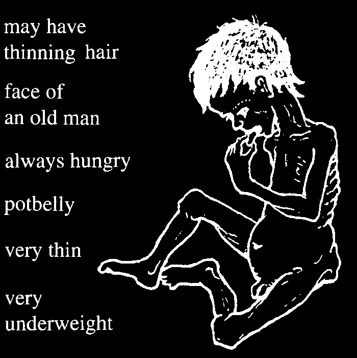
HOW TO RECOGNIZE MALNUTRITION
Among poor people, malnutrition is often most severe in children, who need lots of nutritious food to grow well and stay healthy. There are different forms of malnutrition:
MILD MALNUTRITION
This is the most common form, but it is not always obvious.
The child simply does not grow or gain weight as fast as a wellnourished child. Although he may appear rather small and thin, he usually does not look sick. However, because he is poorly nourished, he may lack strength (resistance) to fight infections.
So he becomes more seriously ill and takes longer to get well than a well nourished child.
Children with this form of malnutrition suffer more from diarrhea and colds. Their colds usually last longer and are more likely to turn into pneumonia. Measles, tuberculosis, and many other infectious diseases are far more dangerous for these malnourished children. More of them die.
It is important that children like these get special care and enough food before they become seriously ill. This is why regular weighing or measuring around the middle upper arm of young children is so important. It helps us to recognize mild malnutrition early and correct it.
Follow the guidelines for preventing malnutrition.
SEVERE MALNUTRITION
This occurs most often in babies who stopped breastfeeding early or suddenly, and who are not given sufficient high energy foods often enough. Severe malnutrition often starts when a child has diarrhea or another infection. We can usually recognize children who are severely malnourished without taking any measurements. The 2 main examples are:
DRY MALNUTRITION—OR MARASMUS
This child does not get enough of any kind of food. He is said to have dry malnutrition or marasmus. In other words, he is starved. His body is small, very thin and wasted. He is little more than skin and bones.
This child needs more food—especially energy foods.
THIS CHILD IS JUST SKIN AND BONES.

WET MALNUTRITION—OR KWASHIORKOR
This child’s condition is called wet malnutrition because his feet, hands, and face are swollen. This can happen when a child does not eat enough 'body building’ helper foods—or proteins. More often it happens when he does not get enough energy foods, and his body burns up whatever proteins he eats for energy.
Eating beans, lentils, or other foods that have been stored in a damp place and are a little moldy may also be part of the cause.
This child needs more food more often—a lot of foods rich in energy, and some foods rich in protein (see
First the child becomes swollen. The other p. 111).
signs come later.
Also, try to avoid foods that are old,
THIS CHILD IS SKIN, BONES, AND WATER.
and may be spoiled or moldy.
OTHER FORMS OF MALNUTRITION
Other forms of malnutrition may result when certain vitamins and minerals are missing from the foods people eat. Many of these specific types of malnutrition are discussed more fully later in this chapter and in other parts of this book:
• Night blindness in children who do not get enough vitamin A (see p. 226).
• Rickets from lack of vitamin D (see p. 125).
• Various skin problems, sores on the lips and mouth, or bleeding gums from not eating enough fruits, vegetables, and other foods containing certain vitamins (see p. 208 and 232).
• Anemia in people who do not get enough iron (see p. 124).
• Goiter from lack of iodine (see p. 130).
For more information about health problems related to nutrition, see Helping Health
Workers Learn, Chapter 25, and Disabled Village Children, Chapters 13 and 30.
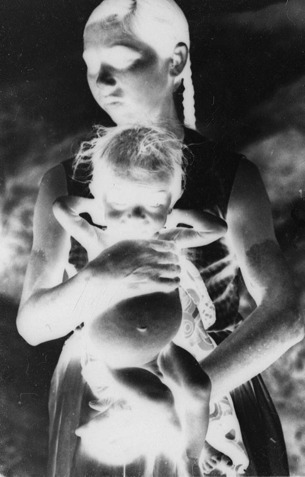
This mother and child are from a poor family and are both poorly nourished. The father works hard, but he does not earn enough to feed the family well. The patches on the mother’s arms are a sign of pellagra, a type of malnutrition. She ate mostly maize and not enough nutritious foods such as beans, eggs, fruit, meat, and dark green vegetables.
The mother did not breastfeed her baby. She fed him only maize porridge. Although this filled his belly, it did not provide enough nutrition for him to grow strong. As a result, this 2 year old child is severely malnourished. He is very small and thin with a swollen belly, his hair is thin, and his physical and mental development will be slower than normal. To prevent this, mothers and their children need to eat better.
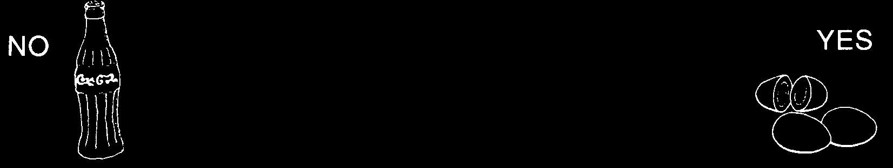
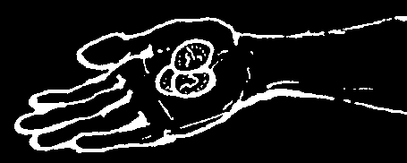
WAYS OF EATING BETTER WHEN YOU DO NOT HAVE MUCH MONEY OR LAND
There are many reasons for hunger and poor nutrition. One main reason is poverty. In many parts of the world a few people own most of the wealth and the land. They may grow crops like coffee or tobacco, which they sell to make money, but which have no food value. Or the poor may farm small plots of borrowed land, while the owners take a big share of the harvest. The problem of hunger and poor nutrition will never be completely solved until people learn to share with each other fairly.
But there are many things people can do to eat better at low cost—and by eating well gain strength to stand up for their rights. On pages w13 and w14 of “Words to the Village Health Worker” are several suggestions for increasing food production.
These include improved use of land through rotating crops, contour ditches, and irrigation; also ideas for breeding fish, beekeeping, grain storage, and family gardens. If the whole village or a group of families works together on some of these things, a lot can be done to improve nutrition.
When considering the question of food and land, it is important to remember that a given amount of land can feed only a certain number of persons. For this reason, some people argue that 'the small family lives better’. However, for many poor families, to have many children is an economic necessity. By the time they are 10 or
12 years old, children of poor families often produce more than they cost. Having a lot of children increases the chance that parents will receive the help and care they need in old age.
In short, lack of social and economic security creates the need for parents to have many children. Therefore, the answer to gaining a balance between people and land does not lie in telling poor people to have small families. It lies in redistributing the land more fairly, paying fair wages, and taking other steps to overcome poverty. Only then can people afford small families and hope to achieve a lasting balance between people and land. (For a discussion of health, food, and social problems, see Helping Health Workers Learn.)
When money is limited, it is important to use it wisely. This means cooperation and looking ahead. Too often the father of a poor family will spend the little bit of money he has on alcohol and tobacco rather than on buying nutritious food, a hen to lay eggs, or something to improve the family’s health. Men who drink together would do well to get together sometime when they are sober, to discuss these problems and look for a healthy solution.
Also, some parents buy sweets or soft drinks (fizzy drinks) for their children when they could spend the same money buying eggs, milk, nuts or other nutritious foods.
This way their children could become more healthy for the same amount of money.
Discuss this with the families and look for solutions.
IF YOU HAVE A LITTLE MONEY
AND WANT TO HELP YOUR CHILD GROW STRONG:
DO NOT BUY HIM A SOFT DRINK OR SWEETS—
BUY HIM 2 EGGS OR A HANDFUL OF NUTS.
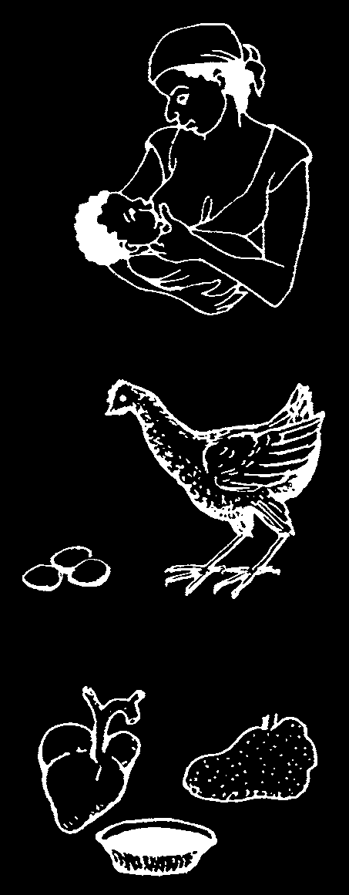
Better Foods at Low Cost
Many of the world’s people eat a lot of bulky, starchy foods, without adding enough helper foods to provide the extra energy, body building, and protection they need. This is partly because many helper foods are expensive—especially those that come from animals, like milk and meat.
Most people cannot afford much food from animals. Animals require more land for the amount of food they provide. A poor family can usually be better nourished if they grow or buy plant foods like beans, peas, lentils, and groundnuts together with a main food such as maize or rice, rather than buy costly animal foods like meat and fish.
People can be strong and healthy when most of their proteins and other helper foods come from plants.
However, where family finances and local customs permit, it is wise to eat, when possible, some food that comes from animals. This is because even plants high in protein (body-building helpers) often do not have all of the different proteins the body needs.
Try to eat a variety of plant foods. Different plants supply the body with different proteins, vitamins, and minerals. For example, beans and maize together meet the body’s needs much better than either beans or maize alone. And if other vegetables and fruits are added, this is even better.
Here are some suggestions for getting more vitamins, minerals, and proteins at low cost.
1. Breast milk. This is the cheapest, healthiest, and most complete food for a baby. The mother can eat plenty of plant foods and turn them into the perfect baby food—breast milk.
Breastfeeding is not only best for the baby, it saves money and prevents diseases!
2. Eggs and chicken. In many places eggs are one of the cheapest and best forms of animal protein. They can be cooked and mixed with foods given to babies who cannot get breast milk. Or they can be given along with breast milk as the baby grows older.
Eggshells that are boiled, finely ground, and mixed with food can provide needed calcium for pregnant women who develop sore, loose teeth or muscle cramps.
Chicken is a good, often fairly cheap form of animal protein—especially if the family raises its own chickens.
3. Liver, heart, kidney, and blood. These are especially high in protein, vitamins, and iron (for anemia) and are often cheaper than other meat. Also fish is often cheaper than other meat, and is just as nutritious.
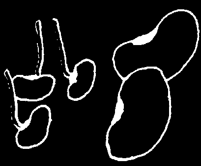
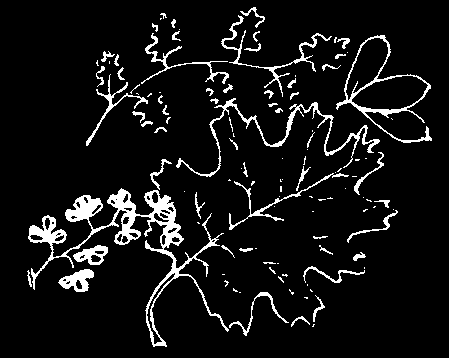
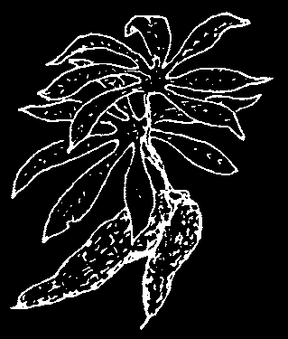


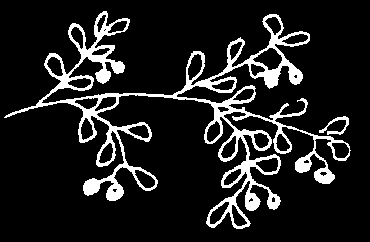
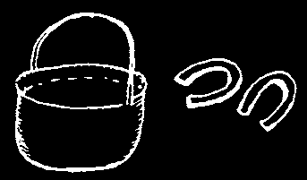
4. Beans, peas, lentils, and other legumes are a good cheap source of protein. If allowed to sprout before cooking and eating, they are higher in vitamins. Baby food can be made from beans by cooking them well, and then straining them through a sieve, or by peeling off their skins, and mashing them.
Beans, peas, and other legumes are not only a low-cost form of protein. Growing these crops makes the soil richer so that other crops will grow better afterwards. For this reason, crop rotation and mixed crops are a good idea
(see p. w13).
5. Dark green leafy vegetables have some iron, a lot of vitamin A, and some protein. The leaves of sweet potatoes, beans and peas, pumpkins and squash, and baobab are especially nutritious. They can be dried, powdered, and mixed with babies’ gruel.
Note: Light green vegetables like cabbage and lettuce have less
nutritional value. It is better to grow ones with dark colored leaves.
6. Cassava (manioc) leaves contain 7 times as much protein and more vitamins than the root. If eaten together with the root, they add food value—at no additional cost. The young leaves are best.
7. Lime soaked maize (corn). When soaked in lime (cal)
before cooking, as is the custom in much of Latin America, maize is richer in calcium. Soaking in lime also allows more of the vitamins (niacin) and protein to be used by the body.
8. Rice, wheat, and other grains are more nutritious if their outer skins are not removed during milling. Moderately milled rice and whole wheat contain more proteins, vitamins, and minerals than the white, over milled product.
NOTE: The protein in wheat, rice, maize, and other grains can be better
used by the body when they are eaten with beans or lentils.
9. Cook vegetables, rice, and other foods in little water. And do not overcook. This way fewer vitamins and proteins are lost. Be sure to drink the leftover water, or use it for soups or in other foods.
10. Many wild fruits and berries are rich in vitamin C as well as natural sugars. They provide extra vitamins and energy. (Be careful not to eat berries or fruit that are poisonous.)
11. Cooking in iron pots or putting a piece of old iron or horseshoe in the pan when cooking beans and other foods adds iron to food and helps prevent anemia. More iron will be available if you also add tomatoes.
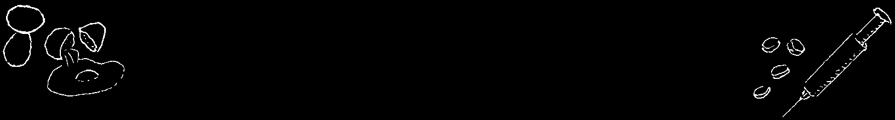
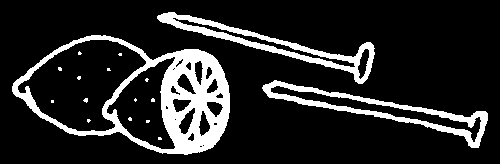
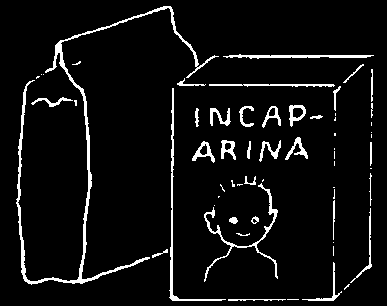
For another source of iron, put some iron nails in a little lemon juice for a few hours. Then make lemonade with the juice and drink it.
12. In some countries, low-cost baby food preparations are available, made from different combinations of soybean, cotton seed, skim milk, or dried fish. Some taste better than others, but most are well balanced foods. When mixed with gruel, cooked cereal, or other baby food, they add to its nutrition content at low cost.
WHERE TO GET VITAMINS: IN PILLS, INJECTIONS, SYRUPS—OR IN FOODS?
Anyone who eats a good mixture of foods, including vegetables and fruits, gets all the vitamins he needs. It is always better to eat well than to buy vitamin pills, injections, syrups, or tonics.
If you want vitamins, buy eggs or other nutritious foods instead of pills or injections.
YES
NO
Sometimes nutritious foods are scarce. If a person is already poorly nourished, or has a serious illness like HIV, he should eat as well as he can and perhaps take vitamins besides.
Vitamins taken by mouth work as well as injections, cost less, and are not as dangerous. Do not inject vitamins! It is better to swallow them—preferably in the form of nutritious foods.
If you buy vitamin preparations, be sure they have all these vitamins and minerals:
♦ Niacin (niacinamide)
♦ Iron (ferrous sulfate, etc.)—especially
♦ Vitamin B1 (thiamine)
for pregnant women.
♦ Vitamin B2 (riboflavin)
(For people with anemia, multi-vitamin pills do not have enough iron to help much. Iron pills are more helpful.)
In addition, certain people need extra:
♦ Folic Acid (folicin), for pregnant
♦ Vitamin B6 (pyridoxine), for small women children and persons taking medicine
♦ Vitamin A for tuberculosis
♦ Vitamin C (ascorbic acid) } for small ♦ Calcium, for children and breastfeeding children
♦ Vitamin D mothers who do not get enough calcium
♦ lodine (in areas where in foods such as milk, cheese, or foods goiter is common)
prepared with lime

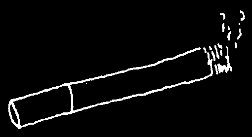